TL;DR
- Mask only what moves. Masking every movable object throws away static structure such as pallets, often without testing whether help was needed. SAVIOR decides conservatively per instance which objects are dynamic outliers and acts only through masks: a class prior sets the default, and stereo depth, an association tree and IMU-compensated motion evidence target hard cases.
- Controlled evaluation. SAVIOR-Warehouse is our simulated stereo-inertial dataset with controllable traffic and a confirmatory split frozen before rendering. On that split, selective masking beats class-level masking at low- and high-dynamic levels and avoids most of its static cost. SAVIOR makes a lightweight filter more accurate at the high-dynamic levels on every trajectory, also when failed runs are excluded, while a small static cost remains possible. A class-prior-only variant performs on par, so on this data the gain comes from the conservative prior. In a pre-specified stress test, SAVIOR beat class-level masking around dominant loads, moving or parked, but did not significantly beat the class prior.
- Real data and real time. On real sequences, where only persons are masked, SAVIOR prevents most filter failures. A C++ node runs at camera rate on an embedded GPU. Optimization-based back-ends gain little or are harmed on the warehouse.
The three points paraphrase the paper's abstract. The paper is under review and the numbers below are quoted from the manuscript, with its caveats.
Method
SAVIOR removes the features of dynamic outliers in the VIO front-end, so that only the remaining measurements reach the estimator, whose code is not modified. A stereo pair and the IMU are the only inputs. The decision is conservative and made per object instance.
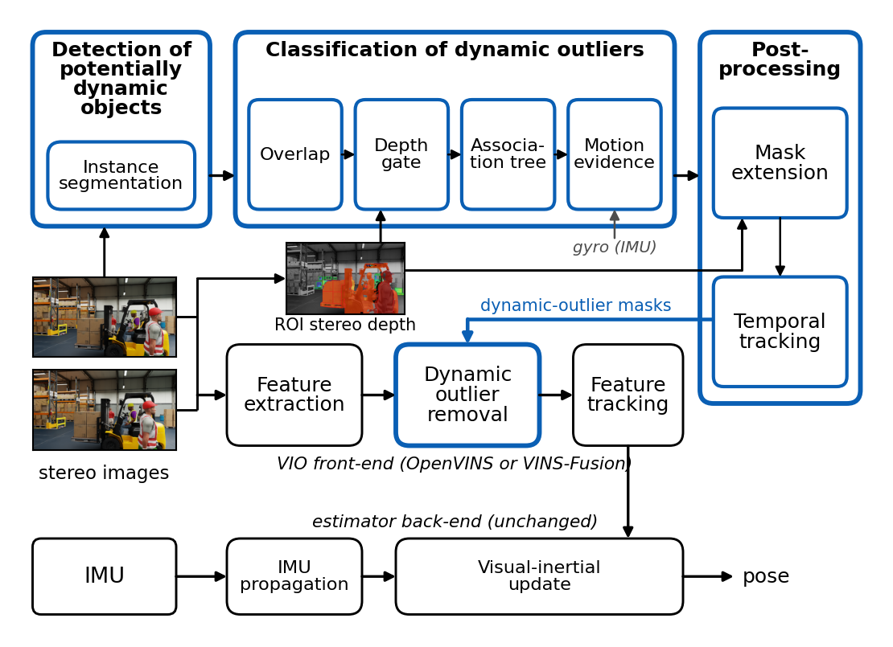
The components
Class prior
Every instance is static (rack, guard rail, window), potentially dynamic (forklift, box, pallet, trolley) or always dynamic (person). People are always masked; boxes, pallets and trolleys are kept unless something links them to a mover. The prior is the default, not the decision.Stereo depth
Depth separates objects that touch in the image but not in space. It is measured only inside the boxes of candidate instances, by semi-global matching of rectified crops. Two touching instances are linked only if their median depths differ by less than a gate (1 m in the main variant).Association tree
Interaction propagates along a tree rooted at the dynamic outliers (box ← forklift ← person), by breadth-first search with a hop limit of 3. Links start only from active parents, so promotion cannot spread through stacks of touching static boxes.IMU-compensated motion evidence
A potentially dynamic object stays masked until motion evidence has confirmed it static over a sustained run, and no static decision counts before the estimator has converged. It handles cases such as a forklift that is parked in one frame and moving in the next.Post-processing
Masks have a core and an optional extension band, and a lightweight tracker carries the mask of a lost always-dynamic track for up to 5 frames. The final SAVIOR does not use the band; only the oracle references do.Front-end integration
One 8-bit mask per camera and frame, at raw image size with the left-image timestamp. A feature is rejected when its pixel is at least 128 in the mask. Only the feature trackers are patched; the MSCKF and the optimizers are used as released.The mask contract: masks are the only interface
keep. The front-end tracks features here as usual.
band. Optional extension margin. Rejects features, but the front-end ignores band pixels if a camera keeps fewer than 30 features. Used by the oracles only.
dynamic core. Always rejects features.
An empty mask (all zero) leaves the front-end bit-identical to OpenVINS without masks on the warehouse. This is why the empty-mask control is an exact reference: on the confirmatory split it reproduced OpenVINS bit for bit in all 480 runs. Because the interface is just an image, the same masks also drive VINS-Fusion and DynaVINS.
The association tree, step by step
The animation steps through the paper's Fig. 3: one SAVIOR-Warehouse frame (aisles scene, medium traffic, tuning split) with a driven forklift carrying a pallet with four boxes, and a person walking in front. The stages run SAVIOR's code on ground-truth instance masks, so the figure shows the classification logic and not segmentation errors. The panels are crops of the paper figure.
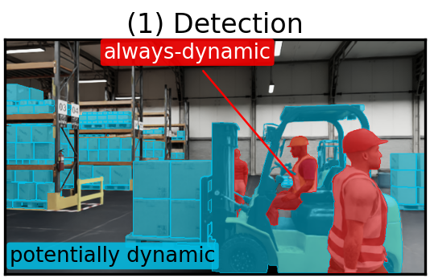

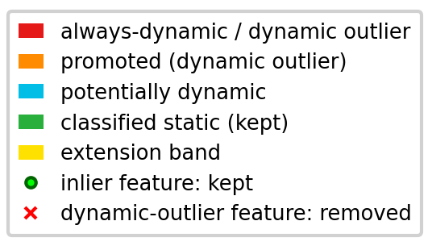
SAVIOR-Warehouse dataset
No public stereo-inertial dataset offers controllable dynamic content with interacting people, forklifts and loads. SAVIOR-Warehouse is rendered with NVIDIA Isaac Sim: a ZED 2i-like global-shutter stereo pair (672×376, 20 Hz, 0.12 m baseline) with a 200 Hz IMU is carried by a quadrotor on a smooth trajectory. Ground truth includes poses, depth and stereo instance segmentation.
Every trajectory is rendered at four nested levels with the same scene, camera path and IMU noise, so that differences come from moving objects only: L0 static (parked forklifts, pallets and boxes), L1 low (walking people), L2 medium (people plus driven forklifts carrying boxes) and L3 heavy traffic (including a forklift that co-moves ahead of the camera).
Four confirmatory environments
The confirmatory split has 24 new, independent trajectories in four Isaac Sim environments, six each: the south hall with new seeded layouts (fw), a small warehouse shell (sw), a warehouse with three rack rows (ms), and an environment from a different asset family (wx). Rendering all four levels gives 96 sequences.
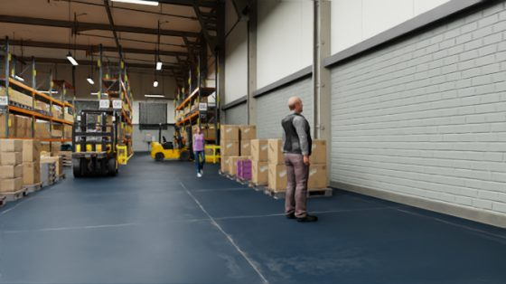
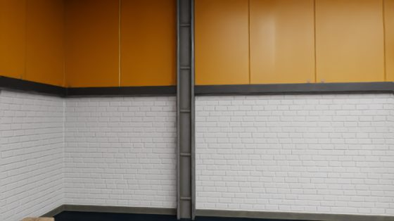
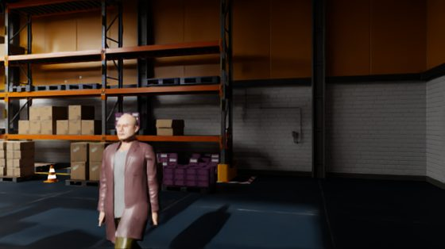
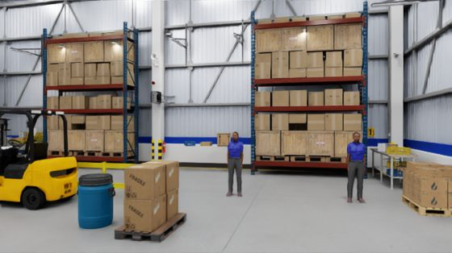
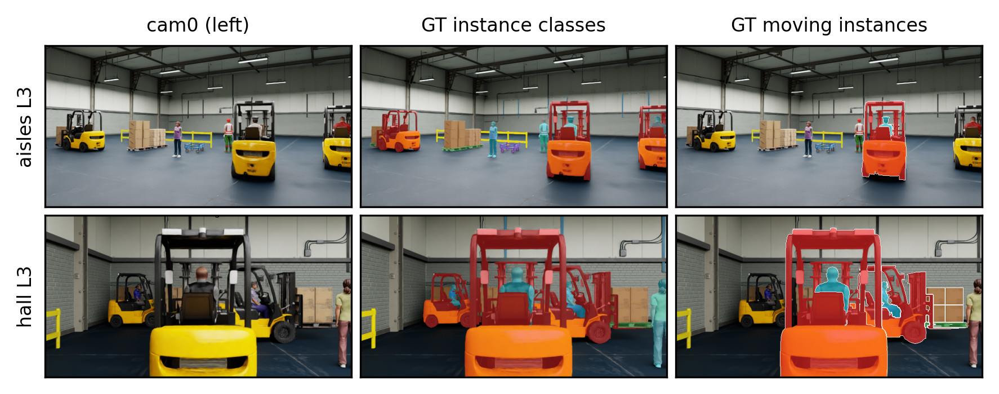
On the confirmatory split, moving objects cover 0.7 % of the pixels at the low level, 2.4 % at medium and 19.8 % at heavy traffic. The design, the methods, the five primary hypotheses and the analysis were frozen before any sequence was rendered.
Masks in action
What do the masks look like when the estimator sees them? Y-Cls masks every box, pallet and trolley; SAVIOR keeps the static ones; the oracle shows the ground-truth dynamic outliers.
Results
ATE changes are paired geometric-mean changes at the trajectory level (negative is better for the first method). Inference covers new trajectories in these four Isaac Sim environments, one of them from a different asset family. Y-Cls is the most conservative class-level policy, so gains over it largely quantify the static class prior.
Confirmatory hypotheses P1 to P5
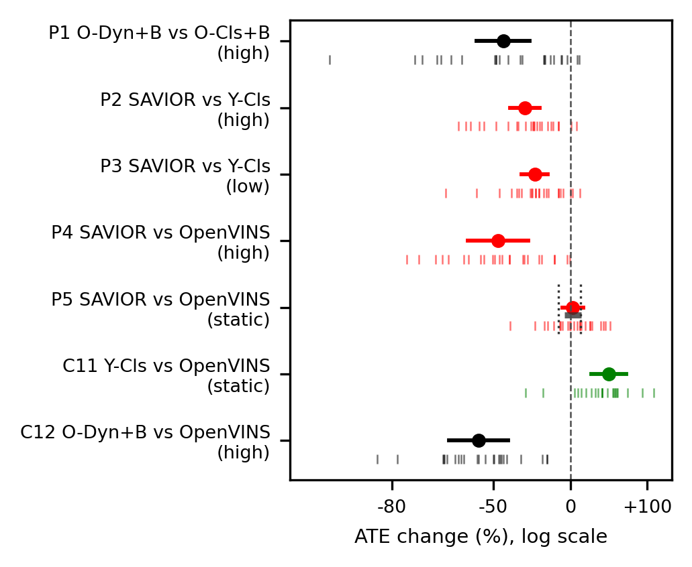
Where SAVIOR's path stays closer to the truth
When does masking matter, and does selective masking pay off?
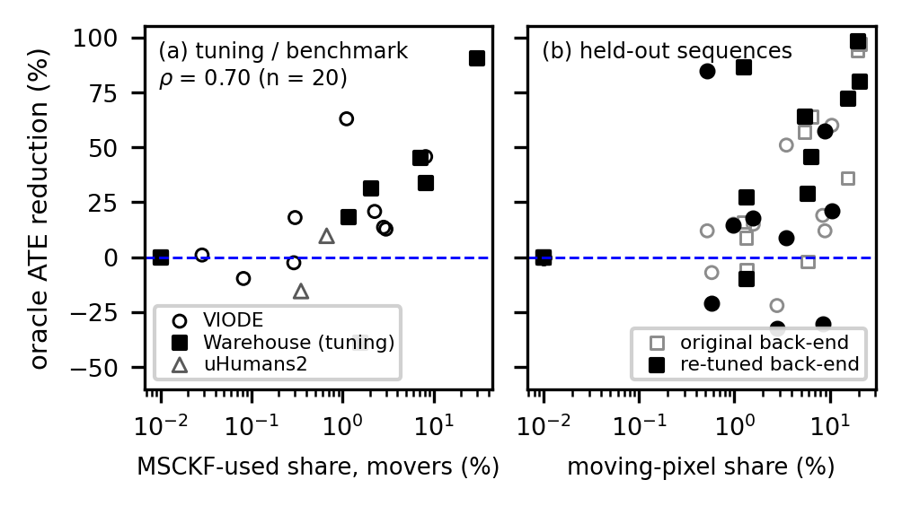
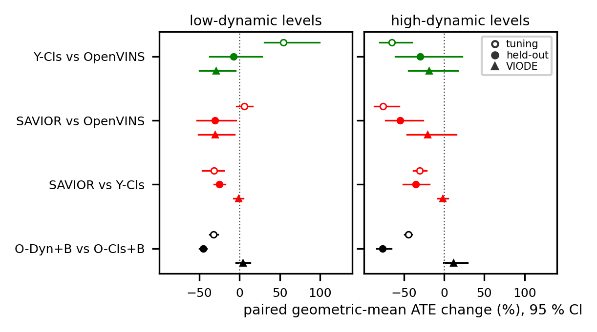
Held-out and VIODE results use third-party or earlier splits and are shown only as the paper's figures. On the warehouse, optimization-based back-ends (VINS-Fusion, DynaVINS) gain little or are harmed; on VIODE, masks mainly remove their initialization failures. Single-component ablations show no held-out benefit from the association tree or motion evidence; the advantage over class-level masking comes mainly from keeping static boxes, pallets and trolleys by default. In a post-hoc check, a class-prior-only variant with SAVIOR's tracker matches SAVIOR's accuracy, while adding the tracker to class-level masking does not help. A pre-specified stress test with loads covering more than half of the image confirmed that SAVIOR keeps parked loads (27 % lower error than class-level masking); with moving loads its lead over the class prior (7 %) was not significant, and no method failed, as the filter already tolerated these loads.
Real sequences
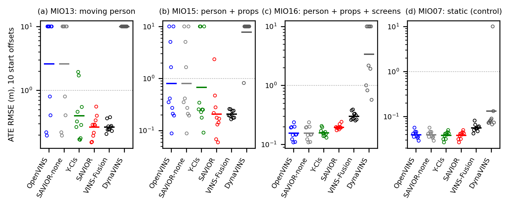
Real time on a Jetson Orin NX
The C++ SAVIOR node runs at 20 Hz on 672×376 stereo images on a Jetson Orin NX 8 GB. The criterion was fixed before any device timing run: a mask for every frame, no frame lost by the filter, a mean node time below the 50 ms frame period, an end-to-end p99 below 250 ms and a peak RAM below 7 GB. The C++ node meets it in all 12 runs, at 24.5 ms median and 49.1 ms p99 per frame, with an end-to-end p99 latency from image to pose of 110 ms (78 ms for OpenVINS alone), at 10.9 W. It reproduces the Python reference bit for bit; the Python node is not real time on the device (109 ms).
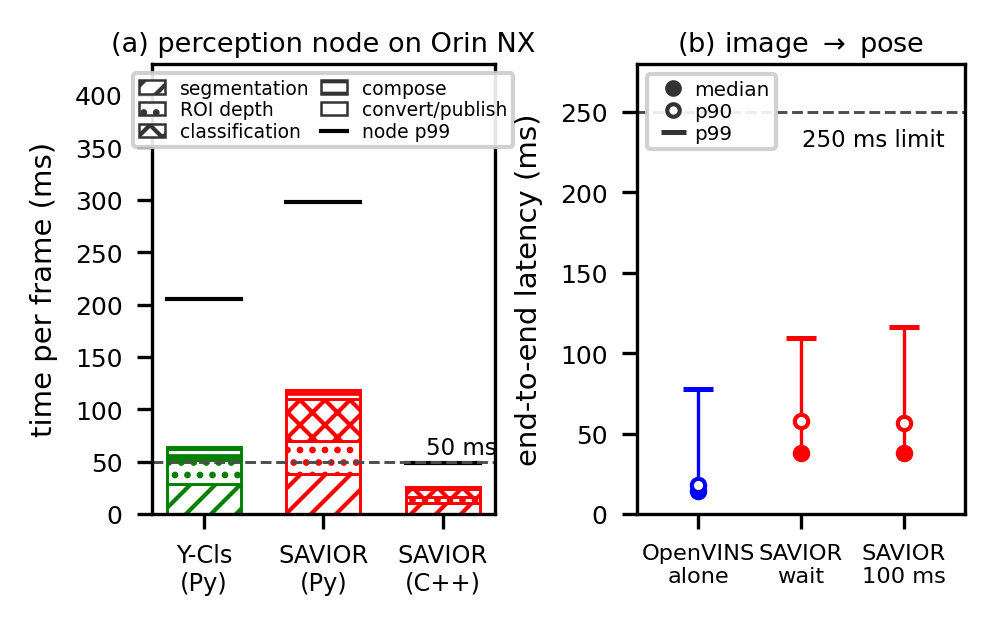
Reproducibility
Code, frozen configurations and the evaluation artefact are in the repository. Start with the README, the data guide docs/DATA.md and the experiment index experiments/README.md. Data and raw outputs are on Zenodo: record A (dataset, artefact), and record B and record C (the confirmatory split).
The frozen protocol. The confirmatory split, its methods, the five hypotheses and the analysis were frozen before any sequence was rendered, and the hypotheses form a fixed chain at the 5 % level in which the first failure ends the confirmatory family. The unit of inference is the trajectory, with five start offsets per sequence; offline replays run with a wait policy, so that runs are deterministic, and start-offset perturbations expose the filter's sensitivity. An empty-mask control checks that the pipeline itself does not change the estimator. The freezes are internal checksums, not registered with a third party.
Limitations stated in the paper. The segmenter was trained in the same simulator as the dataset, so simulated results are not evidence of segmenter generalization, and P4 could be optimistic if the confirmatory layouts overlapped its training data. Y-Cls masks every box, pallet and trolley, so gains over it largely quantify the static class prior; the instance-level evidence was not shown to improve on a class prior on this data, nor in a targeted stress test. Representative commercial warehouses were not accessible for real-world recording. In simulation a tuned χ² gate can beat SAVIOR; the real sensor results rest on three person sequences.
BibTeX
The paper is under review; please cite the software and artefact for now (from CITATION.cff).
@software{savior_code,
title = {{SAVIOR}: code, frozen configurations and evaluation artefact},
author = {Kuruppu Arachchige, Sasanka and Lee, Kyuman},
version = {1.0.0},
year = {2026},
month = oct,
doi = {10.5281/zenodo.23803392},
url = {https://github.com/SasaKuruppuarachchi/SAVIOR},
license = {GPL-3.0-or-later},
note = {Paper under review}
}